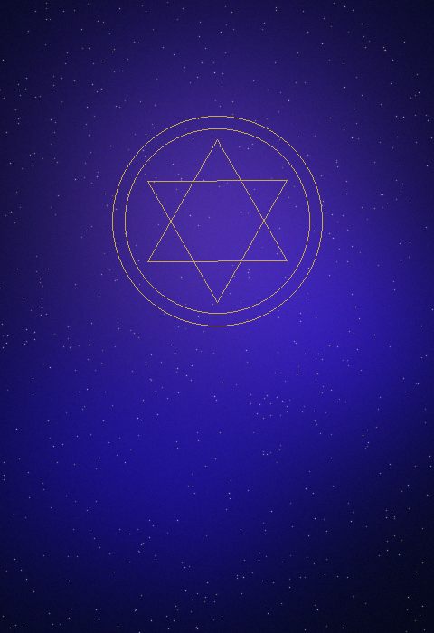

The Flamekeeper
Carries the vision when others have set it down. Holds the why when the what becomes uncertain. An emotional architect.
Bridging Earth & Kanaria is a field guide for those called to co-create what comes next. Your leadership signal is already active. This is where it gets named.
The Starseed Leadership Signal Activation maps the frequency you've been operating from — often without a name for it. Four signal types. Thousands of years of pattern. One map that finally fits.
Carries the vision when others have set it down. Holds the why when the what becomes uncertain. An emotional architect.
Sees the load-bearing structure beneath any system. Builds what the new world needs to stand on. Precision is a form of love.
Born to move between worlds. Speaks science to the spiritual and spirit to the scientific. Belongs to more than one reality at once.
Their stillness is a technology. Their presence is a field. Rooms feel less organized when they leave — and no one can name why.
10 questions · Free · Takes about 4 minutes
"It brought so much together — most all the missing pieces fitting perfectly and singing in resonance, the holes filled in and so many questions answered."
— Early listener
The Author
Rick Broider is a visionary architect, AI integrator, and systems thinker working at the intersection of spiritual intelligence, conscious technology, and regenerative civilization.
Bridging Earth & Kanaria is his transmission — not a book written about ideas, but a field guide written from inside them. Part architecture, part activation, part map for those who already feel the pull of what's emerging.
The work is not about belief. It's about recognition. Something in the reader meets something already alive in them — and finally has a name.
Rick narrated the audiobook himself. The transmission is meant to be received, not just read.

"It brought so much together for me — most all the missing pieces fitting perfectly and singing in resonance, the holes filled in and so many questions answered, leaving me with affirmation and the anticipation of a promise both given and received. A green light to continue on my soul's path towards co-creating the New Earth's future timeline. I'm left fully open-hearted and so hopeful. I SEE YOU, it is time, it is NOW."
Begin Here
The Starseed Leadership Signal Activation is free, takes about four minutes, and often names something the reader has carried for years without a framework for it.
Begin the Signal Activation